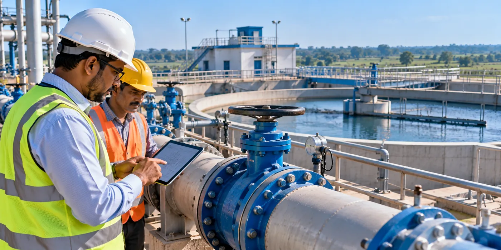

The Assignment
The State Water & Sanitation Mission, Uttar Pradesh required independent Third Party Inspection & Monitoring (TPIM) support for large-scale rural water supply projects across 20 districts.
The assignment involved technical review, field inspection, quality assurance and project monitoring across approximately 1,200 schemes, helping ensure that water supply infrastructure was implemented in accordance with approved designs, specifications and quality requirements.
Our Approach
CS TECH Ai provided comprehensive third-party inspection and monitoring services across the project lifecycle, combining technical reviews with on-site quality and implementation oversight.
The engagement included:
- Review of engineering designs and drawings
- Inspection and monitoring of construction activities
- Quality assurance and quality control (QA/QC)
- Inspection and testing of construction materials
- Verification of measurements and executed works
- Monitoring of water supply infrastructure and project progress
- Support during testing and commissioning
- Reporting and documentation of inspection findings
The programme covered approximately 1,200 rural water supply schemes, comprising around 60,000 km of distribution network, 7,000 ESRs/GSRs and more than 2,000 Water Treatment Plants, with approximately 4.2 million Functional Household Tap Connections (FHTCs).